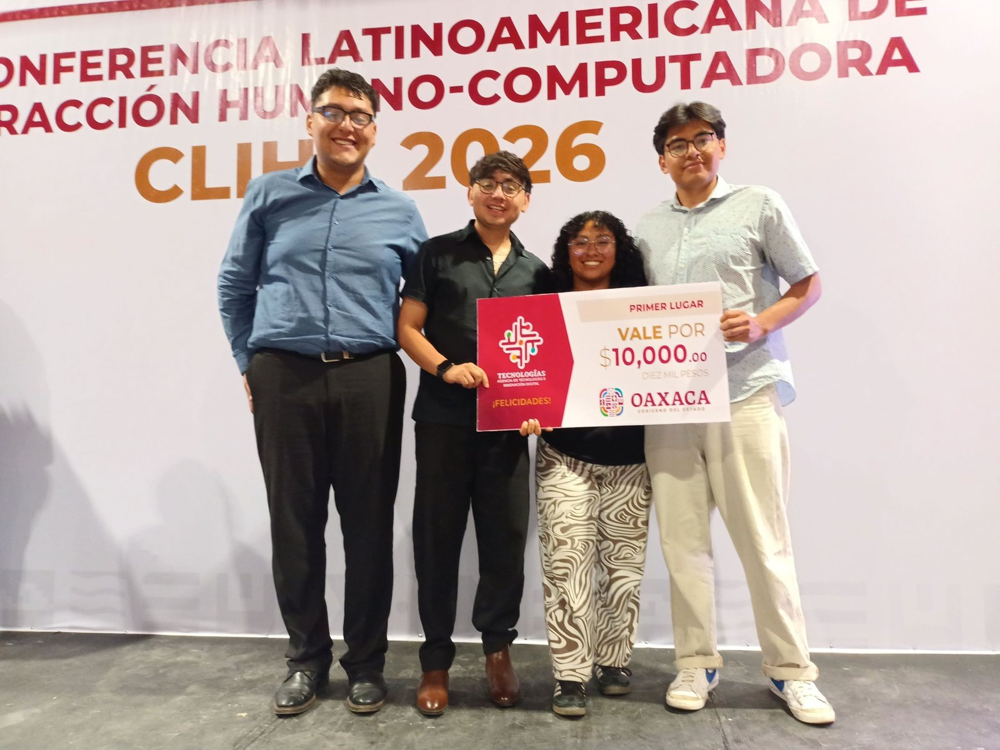
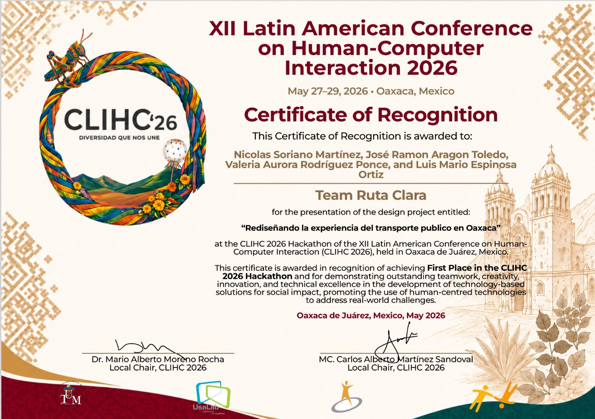

🧩 El reto
Durante tres días, el equipo «Ruta Clara» rediseñó la interfaz de una aplicación móvil de transporte urbano aplicando la metodología de Diseño Centrado en el Usuario (UCD) y respaldando las decisiones de diseño con una investigación con 30 usuarios.
La propuesta obtuvo el primer lugar de la competencia, organizada en el marco de CLIHC 2026, la misma conferencia en la que presenté mi short paper.
- Investigación con 30 usuarios para fundamentar el rediseño
- Rediseño de la interfaz de la app móvil con metodología UCD
- Trabajo en equipo bajo el formato intensivo de un hackathon
📸 Galería

